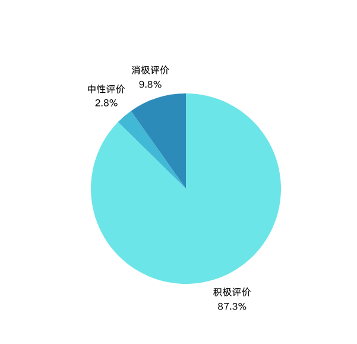

“二十多岁该做什么，将来才不后悔？”知乎回答分析报告
基于知乎问题下387条回答的数据分析
问题介绍
本页面分析了知乎问题“二十多岁该做什么，将来才不后悔？”下的387条回答。通过对回答内容的词频分析、情感分析和词云图展示，我们总结出用户对这一问题的核心观点和建议。
词云图展示

词云图展示了回答中出现频率最高的关键词。字体越大，表示该词出现的频率越高。
关键词频率统计
| 关键词 | 出现次数 |
|---|---|
| 工作 | 407 |
| 人生 | 357 |
| 生活 | 351 |
| 时间 | 329 |
| 现在 | 328 |
| 事情 | 325 |
| 后悔 | 310 |
| 很多 | 283 |
| 知道 | 270 |
| 选择 | 233 |
| 不会 | 214 |
| 可能 | 207 |
| 学习 | 205 |
| 问题 | 202 |
| 喜欢 | 199 |
| 20 | 198 |
| 应该 | 183 |
| 重要 | 180 |
| 已经 | 176 |
| 一定 | 166 |
情感分析

情感分析结果显示：
- 积极评价：338 条（87.3%）
- 中性评价：11 条（2.8%）
- 消极评价：38 条（9.8%）
大多数回答表达了积极的情感，表明用户对“二十多岁该做什么”这一问题持乐观态度。